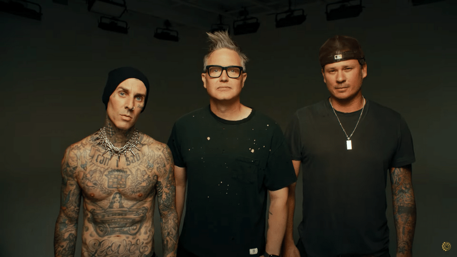

Recomendação: Hit do dia!
Savior" é uma música da banda Rise Against que foi lançada em 2008 como single do álbum "Appeal to Reason". A letra fala sobre a busca por salvação e esperança em meio à escuridão e à desesperança do mundo moderno.
Wolf in Sheep's Clothing" é uma música da banda Set It Off, lançada em 2014 como parte do álbum "Duality". A letra da música descreve uma pessoa manipuladora que esconde sua verdadeira natureza sob uma aparência falsa e amigável, como um lobo em pele de cordeiro
Top 5 bandas de metal:
My chemical Romance: A maior banda emo de todos os tempos!
Clique AQUI para ouvir agora!
Os reis do pop punk: blink-182
Escute AGORA um clássico que marcou muitas gerações!
Mais ouvidos do site